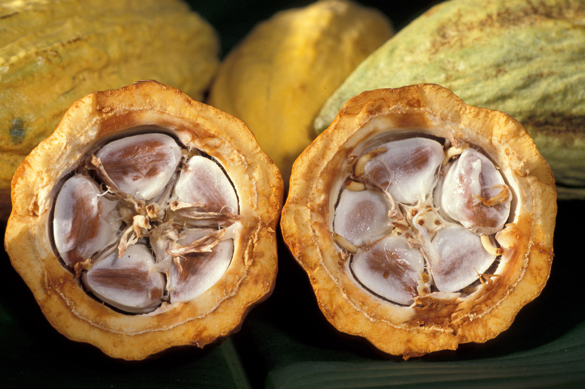
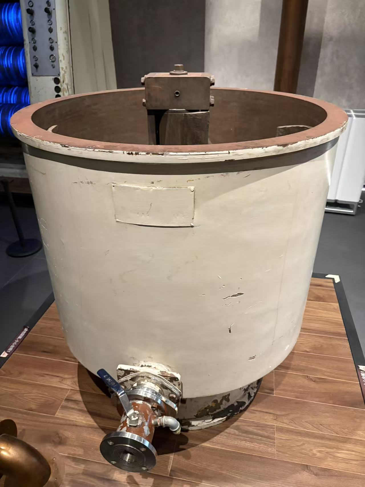
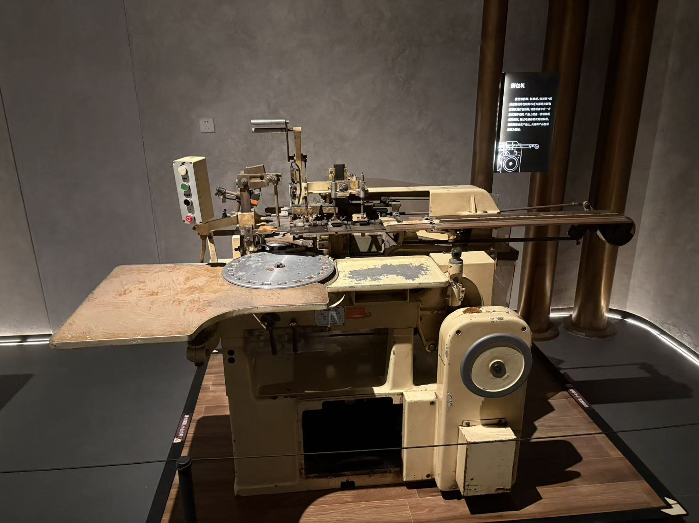

跟着物料走一遍
每一步，发生了什么？
先在产地建立风味基础
- 进入
- 成熟可可果
- 得到
- 经过发酵、干燥和清理的可可豆
剖开成熟可可果取豆；发酵使风味前体逐步形成，再干燥到适合储运的状态。进入工厂后还要验收、清理和分选。
发酵不是烘焙。巧克力的风味，并不是进工厂后才开始形成。


资料图 · 非本次参观烘焙，然后分离豆壳
- 进入
- 清理后的干可可豆
- 得到
- 用于研磨的可可碎粒
烘焙发展香气；随后冷却、破碎，并利用风选等方式把壳和可可碎粒分开。本页使用整豆烘焙路线。
豆壳不是研磨巧克力的主要原料。图中的点火器属于烘焙系统，而非一条完整生产线。
 你的实拍 · 照片 08
你的实拍 · 照片 08

把碎粒磨成可可液块
- 进入
- 可可碎粒
- 得到
- 可可液块：可可脂与非脂固体的混合物
研磨破坏组织、释放可可脂，使物料成为含固体颗粒的可可浆，也称可可液块。名称里的“液”不表示加入了水。
可可液块不等于可可粉。制粉通常还要压榨去掉一部分脂肪，再把压饼粉碎。
 你的实拍 · 照片 10
你的实拍 · 照片 10

配料，再用精磨消除粗糙感
- 进入
- 可可液块、糖、可可脂及配方辅料
- 得到
- 颗粒更细的巧克力混合料
按配方称量、预混，再用辊式精磨等方法细化固体颗粒。奶巧加入奶粉；希望保留完整口感的果仁、饼干碎不应在这里一并磨碎。
展牌给出约 100–150 μm 到 15–35 μm 的变化，用来解释细化作用；不是所有产品的统一验收范围。
 你的实拍 · 照片 19
你的实拍 · 照片 19

精炼，让味道和流动性更合适
- 进入
- 精磨后的混合料
- 得到
- 风味、稠度符合用途的巧克力基料
通过持续机械作用和受控温度，促进湿分及部分挥发性物质去除，改善颗粒的脂肪包覆与流变。再按配方调整，保温等待后段使用。
精磨重点是“磨细”，精炼重点是“风味和流动”。照片里的搅拌缸按展牌用于精炼后保温，不把它当作精炼机。


你的实拍 · 照片 18
调温，为凝固建立合适的晶种
- 进入
- 液态巧克力基料
- 得到
- 具有适当预结晶状态的巧克力
经典理解是充分熔化、受控降温形成晶种、适度回温到工作状态。实际方法和曲线要匹配巧克力配方与设备。
调温不是单纯保温，也不是越冷越好。不能把展牌的 34–35℃ 直接当作所有巧克力的工作温度。
 你的实拍 · 照片 15
你的实拍 · 照片 15

浇模、排气，再冷却脱模
- 进入
- 调温后的巧克力
- 得到
- 保持模具形状的固态巧克力
以实心巧克力为例，注入模具并振动排气；在合适条件下冷却，使其凝固和收缩，然后脱模。金币、夹心、涂层产品在这一阶段会走不同分支。
过快或不合适的冷却并不等于更好。照片没有明确展示完整浇模、冷却与脱模线。
检查、包装，保护已经形成的品质
- 进入
- 脱模后的成品
- 得到
- 适合储运与销售的包装巧克力
检查外观、重量及相应质量项目，选择与产品匹配的包装；储运时避免温度剧烈变化、结露与串味。实际检验和保质期需要另行验证。
刷包机只代表一种包装方式，并不是每一块巧克力都必须经过它。


你的实拍 · 照片 30
多懂一点
容易混淆的地方
黑、奶、白有什么不同？
黑巧以可可液块、糖、可可脂为基础；奶巧再引入乳成分；白巧使用可可脂、糖和乳成分，不加入可可液块。具体配方比例另定。
可可粉从哪里来？
可可液块可以直接去做巧克力，也可以分流压榨，得到可可脂与可可压饼；压饼再粉碎制粉。压榨不是每块巧克力的必经工序。
展牌信息要怎样读？
现代研究通常讨论六种可可脂晶型，调温的重要目标是合适的 V 型晶体；不能把“最稳定”简单理解为最适合巧克力生产。
30 秒自测
五辊机已经把物料磨细，为什么还要精炼和调温？
想好了吗？展开答案
它们解决三个不同问题：精磨细化固体颗粒，精炼改善风味和流动特性，调温管理可可脂的预结晶状态。
有据可查
照片与参考资料
实拍依据来自你拍下的机器与展牌；行业资料用于补齐未拍到的步骤，不代表这些展品曾属于同一条生产线。
查看本页实拍照片（12 张）
照片编号沿用原文件名。点击可放大，原照片未作内容修改。